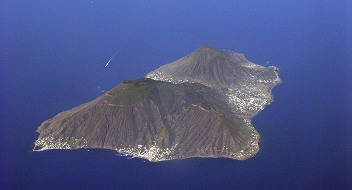

L'isola di Salina
Isola divisa in tre Comuni autonomi, polo agricolo e secondo centro abitato e scolastico dell'arcipelago.
In questa pagina troverai:

Istruzione
L'offerta formativa copre fino alla scuola secondaria di primo grado tramite l'Istituto Comprensivo "Isole Eolie". I plessi presenti nei comuni di Santa Marina, Malfa e Leni garantiscono la continuità scolastica di base, ma gli studenti devono trasferirsi a Lipari o a Milazzo per completare gli studi secondari superiori.
Approvigionamento e cibo
L'isola vanta una parziale produzione agricola locale (capperi e vigneti), ma la sussistenza alimentare dipende dai traghetti commerciali da Milazzo. La presenza di tre scali (Santa Marina, Rinella) e la vicinanza a Lipari garantiscono un flusso di rifornimenti più regolare ed economico rispetto alle isole minori occidentali.
Servizi essenziali
La suddivisione in tre amministrazioni comunali (Santa Marina, Malfa, Leni) richiede presidi decentrati. La copertura sanitaria è garantita da guardie mediche e continuità assistenziale; le urgenze critiche si avvalgono dell'elisoccorso diretto verso Messina o Palermo, compensando l'assenza di un presidio ospedaliero e la dipendenza dalle condizioni meteomarittime.
Fonti
Le analisi sulla vita residenziale eoliana si basano sui dati demografici ISTAT, sui report dell'Ufficio Scolastico Regionale e dell'IC Isole Eolie dedicati alle pluriclassi, sulle tabelle di continuità territoriale della Regione Siciliana e sui bollettini di navigazione di Liberty Lines e Siremar.